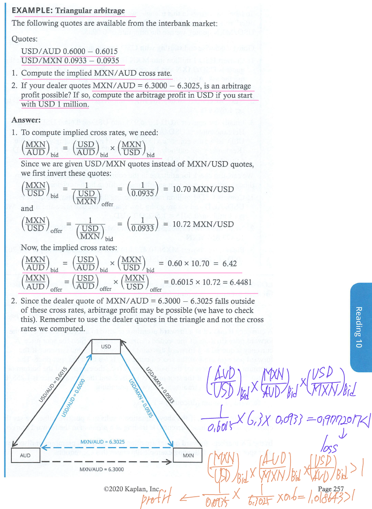

CFA Level 2 Economics
LOS 10.a: Calculate and interpret the bid-offer spread on a spot or forward currency quotation and describe the factors that affect the bit-offer spread.
The “bid-offer” spread is also known as the “bid-ask” spread.
Exchange rates
a quote of 1.4126 USD/EUR means that each euro costs $1.4126. The euro is called the base currency and the USD the price currency.

A spot exchange rate is the currency exchange rate for immediate delivery, which for most currencies means the exchange of currencies takes place two days after the trade (2 business days). A forward exchange is a currency exchange rate for an exchange to be done in the future. Forward rates are quoted for various future dates.
1 month = 30 days in foreign exchange
Dealer quotes often include both bid and offer (ask) rates. For example, the euro could be quoted as $1.4124 - $1.4128. The bid price ($1.4124) is price at which the dealer will buy euros, and the offer price ($1.4128) is the price at which the dealer will sell euros.
Foreign exchange spread
The difference between the offer and bid price is called the spread. Spread are often stated as ‘pips’. One pip is 1/10,000. Dealers manage their foreign currency inventories by transacting in the interbank market (think of this as a wholesale market for currency). Spread are narrow in the interbank market.
The spread quoted by a dealer depends on:
- The spread in an interbank market for the same currency pair. - Dealer spreads vary directly with spreads quoted in the interbank market.
- The size of transaction. - Larger, liquidity-demanding transactions generally get quoted a larger spread.
- The relationship between the dealer and client. - Sometimes, dealer will give favorable rates to preferred clients based on other ongoing business relationships.
The interbank spread on a currency pair depends on:
- Currencies involved - Similar to stocks, high-volume currency pairs command lower spreads than do lower-volume currency pairs.
- Time of day - The time overlap during the trading day when both the New York and London currency markets are open is considered the most liquidity time window; spreads are narrower during this period than at other times of the day.
- Market volatility - Spreads are directly related to the exchange rate volatility of the currencies involved. Higher volatility leads to higher spreads to compensate market makers for the increased risk of holding those currencies.
In addition to these factors, spreads in forward exchange rate quotes increases with maturity. The reasons for this are: longer maturity contracts tend to be less liquid, counterparty credit risk in forward contracts increases with maturity, and interest rate risk in forward contracts increases with maturity.
Working with foreign exchange quotes
Buy the base currency at ask, and sell the base currency at bid
Bu the price currency at bid, and sell the price currency at ask
up-the-bid-and-multiply, down-the-ask-and-divide rule

LOS 10.b: Identify a triangular arbitrage opportunity and calculate its profit, given the bid-offer quotations for three currencies.
Cross rate
Cross rates with bid-ask spreads
Triangular arbitrage

LOS 10.d: Calculate the mark-to-market value of a forward contract.
Mark-to-market value
The value of a forward currency contract prior to expiration is also known as the mark-to-market value. \[ \\\text{long position} \\V_{t} = \frac{(FP_{t} - FP)(\operatorname{contract size})}{1 + R\frac{days}{360}} \\FP_{t} = \text{forward price (to sell base currency) at time t in the market for a new contract maturing at time T} \\FP = \text{forward price specified in the contract at inception (to buy the base currency)} \]
LOS 10.e: Explain international parity conditions (covered and uncovered interest rate parity, forward rate parity, purchasing power parity, and the international Fisher effect).
Covered interest rate parity
Covered interest rate parity holds when any forward premium or discount exactly offsets differences in interest rates, so that an investor would earn the same return investing in either currency. If euro interest rates are higher than dollar interest rates, the forward discount on the euro relative to the dollar will just offset the higher euro interest rate.
\[ \\F = \frac{1 + R_{A}\frac{days}{360}}{1 + R_{B}\frac{days}{360}}S_{0} \] \[ \\\text{forward premium (discount)} = F - S_{0} = [\frac{1 + R_{A}\frac{days}{360}}{1 + R_{B}\frac{days}{360}} - 1]S_{0} \]
Uncovered interest rate parity
If forward currency contracts are not available, or if capital flows are restricted so as to prevent arbitrage, the relationship need not hold. Uncovered interest parity refers to such a situation; \[ \\E(\%\Delta{S})_{A/B} = R_{A} - R_{B} \]

An investor that choose to invest in the foreign currency without any additional return (the interest rate differential is offset by currency value changes) is not demanding a risk premium for the foreign currency risk. Hence, uncovered interest rate parity assume that the investor is risk-neutral.
If the forward rate is equal to the expected future spot rate, we say that the forward rate is an unbiased predictor of the future spot rate. In such an instance, \(F = E(S_{1})\); this is called forward rate parity. In this special case, if covered interest parity holds (and it will; by arbitrage) uncovered interest parity would also hold (and vice versa).
There is no reason that uncovered interest rate parity must hold in the short run, and indeed it typically does not. There is evidence that it does generally hold in the long run, so longer-term expected future spot rates based on uncovered interest rate parity are often used as forecasts of future exchange rates.
(Domestic) Fisher relation
\[ \\R_{nominal} = R_{real} + E(Inflation) \\(1 + R) = (1 + r)(1 + i_{e}) \]
International Fisher relation
Under real interest rate parity, real interest rates are assumed to converge across different markets. Taking the Fisher relation and real interest rate parity together gives us the international Fisher effect. \[ \\R_{nominal\, A} - R_{nominal\, B} = E(inflation_{A}) - E(inflation_{B}) \] The argument for the equality of real interest rates across countries is based on the idea that with free capital flows, funds will move to the country with a higher real rate until real rates are equalized.
Purchasing power parity (PPP, 구매력 평가)
The law of one price states that identical goods should have the same price in all locations.
However, that the law of one price does not hold in practice, due to the effects of frictions such as tariffs and transportation costs.
Instead of focusing on individual products, absolute purchasing power parity (absolute PPP) compares the average price of a representative basket of consumption goods between countries. Absolute PPP requires only that the law of one price be correct on average, that is, for like baskets of goods in each country. \[ \\S(A/B) = CPI(A) / CPI(B) \] In practice, even if the law of one price held for every good in two economies, absolute PPP might not hold because the weights (consumption patterns) of the various goods in the two economies may not be the same.
Relative purchasing power parity
Relative purchasing power parity (relative PPP) states that changes in exchange rates should exactly offset the price effects of any inflation differential between two countries. \[ \\\%\Delta{S_{A/B}} = Inflation_{A} - Inflation_{B} \]
Ex-Ante Version of PPP
The ex-ante version of purchasing power parity is the same as relative purchasing power parity except that it uses expected inflation instead of actual inflation.
Because there is no true arbitrage available to force relative PPP to hold, violations of relative PPP in the short run are common. However, because the evidence suggests that the relative form of PPP holds approximately in the long run, it remains a useful method for estimating the relationship between exchange rates and inflation rates.
환율예측모형
LOS 10.f: Describe relations among the international parity conditions.
- Covered interest parity holds by arbitrage. If forward rate parity holds, uncovered interest rate parity also holds (and vice versa). - Forward rate parity \(F = E(S)\)
- Interest rate differentials should mirror inflation differentials. This holds true if the international Fisher relation holds. If that is true, we can also use inflation differentials to forecast future exchange rates-which is the premise of the ex-ante version of PPP. - Real interest rate parity \(r_{Y} = r_{X}\)
- If the ex-ante version of relative PPP as well as the international Fisher relation both hold, uncovered interest rate parity will also hold.
LOS 10.g: Evaluate the use of the correct spot rate, the forward rate, purchasing power parity, and uncovered interest parity to forecast future spot exchange rates.
LOS 10.h: Explain approaches to assessing the long-run fair value of an exchange rate.
LOS 10.i: Describe the carry trade and its relation to uncovered interest rate parity and calculate the profit from a carry trade.
FX carry trade
If uncovered IRP does not hold
Uncovered interest rate parity states that a currency with a high interest rate should depreciated relative to a currency with a lower interest rate, so that an investor would earn the same return investing in either currency.
In a FX carry trade, an investor invests in a higher yielding currency using funds borrowed in a lower yielding currency. The lower yielding currency is called the funding currency.
The FX carry trade attempts to capture an interest rate differential and is a bet against uncovered interest rate parity. Carry trades typically perform well during low-volatility periods. Sometimes, higher yields attract larger capital flows, which in turn lead to an economic boom and appreciation (instead of depreciation) of the higher yielding currency. This could make the carry trade even more profitable, because the investor earns a return from currency appreciation in addition to the return from the interest rate spread.
Risks of the carry trade
The risk is the funding currency may appreciate significantly against the currency of the investment, which would reduce a trader’s profit-or even lead to a loss. Furthermore, the return distribution of the carry trade is not normal; it is characterized by negative skewness and excess kurtosis (i.e., fat tails), meaning that the probability of a large loss is higher than the probability implied under a normal distribution. We call this high probability of a large loss the crash risk of the carry trade.
As more investors follow and adopt the same strategy, the demand for high-yielding currency actually pushes it value up. However, with this herding behavior comes the risk that all investors may attempt to exit the trade at the same time. (This is especially true if investors use stop-loss orders in their carry trade.) During turbulent times, as investors exit their positions (i.e., a flight to safety), the high-yielding currency can experience a steep decline in value, generating large losses for traders pursuing FX carry trades.
LOS 10.j: Explain how flows in the balance of payment accounts affect currency exchange rates.
Balance of payments (BOP)
Balance-of-payments accounting is a method used to keep track of transactions between a country and its international trading partners.
The current account measure the exchange of goods, the exchange of services, the exchange of investment income, and unilateral transfers (gifts to and from other nations).
The financial account (also known as the capital account) measures the flow of funds for debt and equity investment into and out of the country.
When a country experiences a current account deficit, it must generate a surplus in its capital account (or see its currency depreciate). Capital flows tend to be the dominant factor influencing exchange rates in the short term, as capital flows tend to be larger and more rapidly changing than goods flows.
Influence of BOP on exchange rates
Current account influences
Current account deficits lead to a depreciation of domestic currency via a variety of mechanisms:
- Flow supply / demand mechanisms - Current account deficits in a country increase the supply of that currency in the market (As exporters to that country convert their revenues into their own local currency). This puts downward pressure on the exchange value of that currency. The decrease in the value of the currency may restore the current account deficit to a balance-depending on the following factors:
- The initial deficit - The larger the initial deficit, the larger the depreciation of domestic currency needed to restore current account balance.
- The influence of exchange rates on domestic import and export prices - As a country’s current depreciates, the cost of imported goods increase. However, some of the increase in cost may not be passed on to consumers.
- Price elasticity of demand of the traded goods - If the most important imports are relatively price inelastic, the quantity imported will not change.
- Portfolio balance mechanism - Countries with current account surpluses usually have capital account deficits, which typically take the form of investments in countries with current account deficits. As a result of these flows of capital, investor countries may find their portfolios’ composition being dominated by few investee currencies. When investor countries decide to rebalance their investment portfolios, it can have a significant negative impact on the value of those investee country currencies.
- Debt sustainability mechanism - A country running a current account deficit may be running a capital account surplus by borrowing from abroad. When the level of debt gets too high relative to GDP, investors may question the sustainability of this level of debt, leading to a rapid depreciation of the borrower’s currency.
Capital account influences
Capital account flows are one of the major determinants of exchange rates. As capital flows into a country, demand for that country’s currency increase, resulting in appreciation.
Excessive capital inflows into emerging markets create problems for those countries such as:
- Excessive real appreciation of the domestic currency.
- Financial asset and / or real estate bubbles.
- Increases in external debt by businesses or government.
- Excessive consumption in the domestic market fueled by credit.
Emerging market government often counteract excessive capital inflows by imposing capital controls or by direct intervention in the foreign exchange markets.
LOS 10.k: Explain the potential effects of monetary and fiscal policy on exchange rates.
Mundell-Fleming model
Flexible exchange rate regimes
High capital mobility
Expansionary monetary policy and expansionary fiscal policy are likely to have opposite effects on exchange rates.
Low capital mobility
Fixed exchange rate regimes
An expansionary (restrictive) monetary policy would lead to depreciation (appreciation) of the domestic currency as stated previously. Under a fixed rate regime, the government would then have to purchase (sell) its own currency in the foreign exchange market. This action essentially reverses the expansionary (restrictive) stance.
Monetary approach to exchange rate determination
Monetary models only take into account the effect of monetary policy on exchange rates (fiscal policy effects are not considered). With the Mundell-Fleming model, we assume that inflation (price levels) play no role in exchange rate determination. Under monetary models, we assume that output is fixed, so that monetary policy primarily affects inflation, which in turn affects exchange rates.
- Pure monetary model - Therefore an x% increase in the money supply leads to an x% increase in price levels and then to an x% depreciation of domestic currency.
- Dornbusch overshooting model - This model assumes that prices are sticky (inflexible) in the short term and, hence, do not immediately reflect changes in monetary policy (in other words, PPP does not hold in the short term). The model concludes that exchange rates will overshoot the long-run PPP value in the short term. In the case of expansionary monetary policy, prices increase, but over time. Expansionary monetary policy leads to a decrease in interest rates-and a larger-than-PPP-implied depreciation of the domestic currency due to capital outflows. In the long term, exchange rates gradually increase toward their PPP implied values.
Portfolio balance approach to exchange rate determination
The portfolio balance approach focuses only on the effects of fiscal policy (and not monetary policy). While the Mundell-Fleming model focuses on the short-term implication of fiscal policy, the portfolio balance approach takes a long-term view and evaluates the effects of a sustainable fiscal deficit or surplus on currency values.
Combining the Mundell-Fleming and portfolio balance approaches, we find that in the short term, with free capital flows, an expansionary fiscal policy leads to domestic currency appreciation (via high interest rates). In the long term, the government has to reverse course (through tighter fiscal policy) leading to depreciation of the domestic currency. If the government does not reverse course, it will have to monetize its debt, which would also lead to depreciation of the domestic currency.
LOS 10.l: Describe objectives of central bank or government intervention and capital controls and describe the effectiveness of intervention and capital controls.
Objectives
The objectives of capital controls or central bank intervention in FX markets are to:
- Ensure that the domestic currency does not appreciate excessively.
- Allow the pursuit of independent monetary policies without being hindered by their impact on currency value.
- Reduce the aggregate volume of inflow of foreign capital.
Effectiveness
For developed market countries, the volume of trading in a country’s currency is usually very large relative to the foreign exchange reserves of it central bank. Evidence has shown that for developed markets, central banks are relatively ineffective at intervening in the foreign exchange markets due to lack of sufficient resources. Evidence in the case of emerging markets is less clear: central banks of emerging market countries may be able to accumulate sufficient foreign exchange reserves (relative to trading volume) to affect the supply and demand of their currencies in the foreign exchange markets.
LOS 10.m: Describe warning signs of a currency crisis.
The following conditions have been identified as warning signs in the period leading up to a currency crisis:
- Terms of trade (i.e., ratio of exports to imports) deteriorate
- Fixed or partially-fixed exchange rates (versus floating exchange rates)
- Official foreign exchange reserves dramatically decline
- Currency value that has risen above its historical mean
- Inflation increases
- Liberalized capital markets, that allows for the free flow of capital
- Money supply relative to bank reserves increases
- Banking crises (may also be coincident)
LOS 11.a: Compare factors favoring and limiting economic growth in developed and developing economies.
A country’s standard of living, however, is best measured by GDP per capita.
Preconditions for growth
- Savings and investment - If a country has insufficient domestic savings, it must attract foreign investment in order to grow.
- Financial markets and intermediaries
- Political stability, rule of law, and property rights
- Investment in human capital - Consequently, countries that invest in education and health care systems tend to have higher growth rates. Developed countries benefit the most from post-secondary education spending, which has been shown to foster innovation. Less-developed countries benefit the most from spending on primary and secondary education, which enables the workforce to apply the technology developed elsewhere.
- Tax and regulatory systems - Lower levels of regulation foster entrepreneurial activity (startups), which have been shown to be positively related to the overall level of productivity.
- Free trade and unrestricted capital flows
LOS 11.b: Describe the relation between the long-run rate of stock market appreciation and the sustainable growth rate of the economy.
To understand this, consider that the growth in aggregate stock market valuation is a function of GDP growth, growth in earnings relative to GDP, and growth in the price to earing ratio: \[ \\\Delta{P} = \Delta{GDP} + \Delta{(E/GDP)} + \Delta{(P/E)} \\\text{long term: } \Delta{(E/GDP)} = \Delta{(P/E)} = 0 \] Over the long-term, we have to recognize that growth in earnings relative to GDP is zero; growth in the P/E ratio will also be zero over the long term; Hence over a sufficiently long time horizon, the potential GDP growth rate equals the growth rate of aggregate equity valuation.
LOS 11.c: Explain why potential GDP and its growth rate matter for equity and fixed income investors.

Positive growth in potential GDP indicates that future income will rise relative to current income. When consumers expect their incomes to rise, they increase current consumption and save less for future consumption (i.e., they are less likely to worry about funding their future consumption). To encourage consumers to delay consumption (i.e., to encourage savings), investments would have to offer a higher real rate of return. Therefore, higher potential GDP growth implies higher interest rates and higher real estate returns in general.
In the short term, the relationship between actual GDP and potential GDP may provide insight to both equity and fixed-income investors as to the state of the economy. For example, since actual GDP in excess of potential GDP results in rising prices, the gap between the two can be used as a forecast of inflationary pressures-useful to all investors but of particular concern to fixed-income investors. Furthermore, central banks are likely to adopt monetary policies consistent with the gap between potential output and actual output. When actual GPD growth rate is higher (lower) than potential GDP growth rate, concerns about inflation increase (decrease) and the central bank is more likely to follow restrictive (expansionary) monetary policy.
LOS 11.d: Distinguish between capital deepening investment and technological progress and explain how each effects economic growth and labor productivity.
Factor inputs and economic growth
Output (Y) is a function of labor (L) and capital (K), given a level of technology (T)
Capital investment on economic growth and labor productivity, consider a Cobb-Douglas production function which takes the form: \[ \\Y = TK^{\alpha}L^{1 - \alpha} \\\alpha\, and (1 - \alpha) = \text{the share of output allocated to capital (K) and labor (L), respectively } [\alpha\, and (1 - \alpha) \text{ are also referred to as capital's and labor's share of total factor cost, where } \alpha < 1] \\T = \text{a scale factor that represents that technological progress of the economy, often referred to as total factor productivity (TFP)} \]
The Cobb-Douglas function essentially states that output (GDP) is a function of labor and capital inputs and their productivity. It exhibits constant returns of scale; increasing both inputs by a fixed percentage leads to the same percentage increase in output.
Dividing both sides by L in the Cobb-Douglas production function, we can obtain the output per worker (labor productivity). \[ \\\text{output per worker} = Y / L = T(K / L)^{\alpha} \] Labor productivity is similar to GDP per capital, a standard of living measure. Assuming the number of workers and \(\alpha\) remain constant, increasing in output can be gained by increasing capital per worker (capital deepening) or by improving technology (increasing TFP).
However, since \(\alpha\) is less than one, additional capital has a diminishing effect on productivity: the lower the value of \(\alpha\), the lower the benefit of capital deepening. Developed markets typically have a high capital to labor ratio and a lower \(\alpha\) compared to developing markets, and therefore developed markets stand to gain less in increased productivity from capital deepening.
In stead state (i.e., equilibrium), the marginal product of capital (MPK = \(\alpha\)Y/K) and marginal cost of capital (i.e., the rental price of capital, r) are equal; hence: \[ \\\alpha Y / K = r \\\alpha = r K / Y \\MPK = \frac{dY}{dK} = \alpha T K^{\alpha - 1} L^{1 - \alpha} = \frac{\alpha T K^{\alpha} L^{1 - \alpha}}{K} = \frac{\alpha Y}{K} \] Economies will increase investment in capital as long as MPK > r. At the level of K / L for which MPK = r, capital deepening stops and labor productivity becomes stangnant.
\[ \\\operatorname{labor productivity growth rate} = \operatorname{growth due to technological change} + \operatorname{growth due to capital deepening} \\\frac{\Delta{Y}}{Y} = \frac{\Delta{T}}{T} + \alpha\frac{\Delta{K}}{K} + (1 - \alpha)\frac{\Delta{L}}{L} \\(y = \frac{Y}{L}, k = \frac{K}{L}) \\y = TK^{\alpha} \\\frac{\Delta{y}}{y} = \frac{\Delta{T}}{T} + \alpha\frac{\Delta{K}}{K} \]
LOS 11.e: Forecast potential GDP based on growth accounting relations.
Growth accounting relations
\[ \\\Delta{Y}/Y = \Delta{A} / A + \alpha * \Delta{K} / K + (1 - \alpha) * \Delta{L} / L \\A = \text{technology} \\\alpha = \text{elasticity of output with respect to capital} = \text{share of income paid to capital} \\(1 - \alpha) = \text{elasticity of output with respect to labor} = \text{share of income paid to labor} \\\text{growth rate in potential GDP} = \text{long-term growth rate of technology} + \alpha (\text{long-term growth rate of capital}) + (1 - \alpha) (\text{long-term growth rate of labor}) \]
Another approach to forecasting potential GDP growth is the labor productivity growth accounting equation, which focuses on changes in labor as follows: \[ \\\text{growth rate in potential GDP} = \text{long-term growth rate of labor force} + \text{long-term growth rate in labor productivity} \\\frac{\Delta{y}}{y} = \frac{\Delta{Y}}{Y} - \frac{\Delta{L}}{L} \]
LOS 11.f: Explain how natural resources affect economic growth and evaluate the argument that limited availability of natural resources constrains economic growth.
Natural resources include both renewable resources, such as timber, and non-renewable resources, such as oil and gas.
One reason that limited natural resources do not necessarily constrain economic growth is that access to natural resources does not require ownership of resources.
The so-called “Dutch disease” refers to a situation where global demand for a country’s natural resources drives up the country’s currency values, making all exports more expensive and rendering other domestic industries uncompetitive in the global markets.
LOS 11.g: Explain how demographics, immigration, and labor force participation affect the rate and sustainability of economic growth.
An increase in the quantity of labor will increase output, but not per capital output. Labor force is defined as the number of working age (ages 16-64) people available to work, both employed and unemployed.
Labor supply factors
Demographics - Countries with younger population have higher potential growth.
Labor force participation \[ \\\text{labor force participation} = \frac{\text{labor force}}{\text{working age population}} \] Labor force participation can increase as more women enter the workforce.
Immigration - Immigration poses a potential solution to declining labor force. Countries with low population growth or adverse demographic shifts (older population) may find their growth constrained. Since developed countries tend to have lower fertility rates than less developed countries, immigration represents a potential source of continued economic growth in developed countries.
Average hours worked - For most countries, the general trend in average hours worked in downward. Possible explanations include legislation limiting the number of hours worked, the “wealth effect” which includes individuals to take more leisure time, high tax rates on labor income, and an increase in part-time and temporary workers.
LOS 11.h: Explain how investment in physical capital, human capital, and technological development affects economic growth.
Human capital
Human capital is knowledge and skills individual possess.
Physical capital
Physical capital is generally separated into infrastructure, computers, and telecommunication capital (ICT) and non-ICT capital (i.e., machinery, transportation, and non-residential construction). Empirical research has found a strong correlation between investment in physical capital and GDP growth rates.
This result may seen inconsistent given our previous discussion about capital deepening and diminishing marginal returns to capital. First, many countries (e.g., developing economies have relatively low capital to labor ratios, so increases in capital may still have significant impact on economic growth. Second, capital investment can take different forms. Some capital investment actually influence technological progress, thereby increasing TFP and economic growth. For example, acceleration of spending in the IT sector has created what are termed network externalities. Investment in IT networks may have multiplicative effects on productivity since IT network investment actually becomes more valuable as more people are connected to the network.
Technological development
Researchers have examined proxies for investment in technology such as research and development (R&D) spending or number of patents issued.
Public infrastructure
LOS 11.i: Compare classical growth theory, neoclassical growth theory, and endogenous growth theory.
Classical growth theory
Based on Malthusian economics, classical growth theory posits that, in the long-term, population growth increases whenever there are increases in per capita income above subsistence level due to an increase in capital or technological progress. Subsistence level is the minimum income needed to maintain life. Classical growth theory contends that growth in real GDP per capita is not permanent, because when real GDP per capita rises above the subsistence level, a population explosion occurs. Population growth leads to diminishing marginal returns to labor, which reduces productivity and drives GDP per capita back to the subsistence level. This mechanism would prevent long-term growth in per capita income. Classical growth theory is not supported by empirical evidence.
Neoclassical growth theory
Neoclassical growth theory’s primary focus is on estimating the economy’s long-term steady state growth rate (sustainable growth rate or equilibrium growth rate). The economy is at equilibrium when the output-to-capital ratio is constant. Under neoclassical theory, population growth is independent of economic growth.
Sustainable growth of output per capita (or output per worker)(\(g^{*}\)) is equal to the growth rate in technology (\(\theta\)) divided by labor’s share of GDP (\(1 - \alpha\)) \[ \\g^{*} = \frac{\theta}{1 - \alpha} \]
Sustainable growth rate of output (\(G^{*}\)) is equal to the sustainable growth rate of output per capita, plus the growth of labor (\(\Delta{L}\)). \[ \\G^{*} = \frac{\theta}{1 - \alpha} + \Delta{L} \]
Under neoclassical theory:
- Capital deepening affects the level of output but not the growth rate in the long run. Capital deepening may temporarily increase the growth rate, but the growth rate will revert back to the sustainable level if there is no technological progress.
- An economy’s growth rate will move towards its steady state regardless of the initial capital to labor ratio or level of technology.
- In the steady state, the growth rate in productivity is a function only of the growth rate of technology and labor’s share of total output.
- In the steady state, marginal product of capital (MPK) = \(\alpha\) Y / K is constant, but marginal productivity is diminishing.
- An increase in savings will only temporarily raise economic growth. However, countries with higher savings rates will enjoy higher capital to labor ratio and higher productivity.
- Developing countries (with a lower level of capital per worker) will be impacted less by diminishing marginal productivity of capital, and hence have higher growth rates as compared to developed countries; there will be eventual convergence of per capita incomes.
Endogenous growth theory
Endogenous growth theory contends that technological growth emerges as a result of investment in both physical and human capital (hence the name endogenous which means coming from within). Technological progress enhances productivity of both labor and capital. Unlike the neoclassical model, there is no steady state growth rate, so that increased investment can permanently increase the rate of growth.
Increasing R&D investments, for example, results in benefits that also external to the firm making the R&D investments. Those benefits raise the level of growth for the entire economy.
The endogenous growth model theorize that returns to capital are constant. The endogenous growth model implies that an increase in savings will permanently increase the growth rate.
Endogenous growth theory, on the other hand, assumes that capital investment (R&D expenditures) may actually improve total factor productivity.
LOS 11.j: Explain and evaluate convergence hypothesis.
The absolute convergence hypothesis states that less developed countries will achieve equal living standards over time. The conditional convergence hypothesis states that convergence in living standards will only occur for countries with the same savings rates, population growth rates, and production functions. Under the conditional convergence hypothesis, the growth rate will be higher for less developed countries until they catch up. Under the neoclassical model, once a developing country’s standard of living converges with that of developed countries, the growth rate will then stabilize to the same steady state growth rate as that of developed countries.
Club convergence. Under this hypothesis, countries may be part of a ‘club’ (i.e., countries with similar institutional features such as savings rates, financial markets, property rights, health and educational services, etc.). Under club convergence, pooper countries that are part of the club will grow rapidly to catch up with their richer peers. Countries can ‘join’ the club by making appropriate institutional changes. Those countries that are not part of the club may never achieve the higher standard of living.
LOS 11.k: Describe the economic rationale for governments to provide incentives to private investment in technology and knowledge.
Under endogenous growth theory, private sector investments in R&D and knowledge capital benefit the society overall. The effects of ‘social returns’ of externalities are captured in the endogenous growth theory model, which concludes that economies may not reach a steady state growth but may permanently increase growth by expenditures that provide both benefits to the company (private benefits) and benefits to society (externalities).
LOS 11.l: Describe the expected impact of removing trade barriers on capital investment and profits, employment and wages, and growth in the economies involved.
Removing trade barriers and allowing for free flow of capital is likely to have the following benefits for countries:
- Increased investment from foreign savings
- Allows focus on industries where the country has a comparative advantage
- Increased markets for domestic products, resulting in economies of scale
- Increased sharing of technology and higher total factor productivity growth
- Increased competition leading to failure of inefficient firms and reallocation of their assets to more efficient uses
The neoclassical model’s predictions in an open economy (i.e., an economy without any barriers to trade or capital flow) focus on the convergence. Since developing economies have not reached the point of significant diminishing returns on capital, they can attract capital through foreign investment and experience productivity growth as a result. Eventually, these economies will develop; their growth will slow and will converge to the steady state growth rate of developed economies.
The endogenous growth model also predicts greater growth with free trade and high mobility of capital since open markets foster increased innovation. As foreign competition increases, more efficient and innovation firms will survive. Those firms permanently increase the growth rate of the international economy by providing benefits beyond those simply captured by the firm. Economies of scale also increase output as firms serve larger markets and become more efficient.
LOS 12.a: Describe the economic rationale for regulatory intervention.
Economic rationale for regulation
Regulations are often required when markets cannot provide efficient solutions (also known as Pareto optimal, which means that one cannot make any participant better off without making some other participant worse off) for all problems.
Informational frictions - information asymmetry
Externalities are costs or benefits that affect a party that did not choose to incur that cost or benefit.
Weak competition can lead to fewer choices, higher prices, and lack of innovation. Antitrust regulations seek to mitigate this problem.
Social objectives are achieved via provision of public goods. A public good is a resource that can be enjoyed by a person without making it unavailable to others.

LOS 12.b: Explain the purposes of regulating commerce and financial markets.
- Regulating commerce
- Regulating financial markets - The objectives of securities regulations include three interrelated goals: protect investors, create confidence in the markets, and enhance capital formation.
Regulation of security markets
- Disclosure requirements
- Regulations imposing fiduciary duties seek to mitigate such agency problems.
- Regulations have historically focused on protecting small (retail) investors.
Prudential supervision
Prudential supervision refers to the monitoring and regulation of financial institutions to reduce system-wide risks to protect investors. Prudential supervision is important because the failure of one financial institution can have a far-reaching impact and may result in a loss of confidence.
LOS 12.c: Describe anticompetitive behaviors targeted by antitrust laws globally and evaluate the antitrust risk associated with a given business strategy.
Antitrust regulation
LOS 12.d: Describe classification of regulations and regulators.
Statutes - laws made by legislative bodies
Administrative regulations - rules issued by government agencies or other bodies authorized by the government
Judicial law - findings of the court
Regulators
Regulators can be government agencies or independent regulators. Independent regulators are given recognition by government agencies and have power to make rules and enforce them. However, independent regulators are usually not funded by the government and hence are politically independent.
Industry self-regulatory bodies (SRBs) are private organization that represent as well as regulate their members. Members of SRBs have to adhere to its rules. SRBs nonetheless are attractive in that they increase the overall level of regulatory resources, utilize the industry professionals with the requisite expertise, and allow regulators to devote resources to other priorities.
SRBs that are recognized by the government and given enforcement powers are self-regulating organizations (SROs). SROs are also independently funded and, as such, are politically independent. SROs regulate the behavior of their members and often provide public goods in the form of standards. Because of their recognition by the government, SROs fall within the category of independent regulators.
Outside bodies are not regulators themselves, but their product is referenced by regulators. Examples of outside bodies include FASB and IASB.
LOS 12.e: Describe uses of self-regulation in financial markets.
LOS 12.f: Describe regulatory interdependent and their effects.
Regulatory interdependencies
The regulatory capture is based upon the assumption that, regardless of the original purpose behind its establishment, a regulatory body will, at some point in time, be influenced or even possibly controlled by the industry that is being regulated. The rationale behind the theory is that regulators often have experience in the industry, and this affects the regulators’ ability to render impartial decisions.
Regulatory differences between jurisdictions can lead to regulatory competition, in which regulators compete to provide the most business-friendly regulatory environment. Regulatory arbitrage occurs when businesses shop for a country that allows a specific behavior rather than changing the behavior. Regulatory arbitrage also entails exploiting the difference between the economic substance and interpretation of a regulation.
LOS 12.g: Describe tools of regulatory intervention in markets.
Tools of regulatory intervention
- Price mechanisms - Price mechanisms such as taxes and subsidies can be used to further specific regulatory objectives; for example, sin taxes are often used to deter consumption of alcohol.
- Restricting or requiring certain activities - Regulators may ban certain activities or require that certain activities be performed to further their objectives.
- Provision of public goods or financing of private projects - Regulators may provide public goods or fund private projects depending on their political priorities and objectives.
LOS 12.h: Describe benefits and costs of regulation.
Cost benefit analysis of regulation
The costs and benefits of regulations may be easy to view but difficult to quantify. An analyst should also consider the cost of the regulation to the private sector.
Regulatory burden (also known as government burden) refers to the cost of compliance for the regulated entity. Regulatory burden minus the private benefits of regulation is known as the net regulatory burden.
Regulators should be aware of unintended consequences of regulations.
Regulatory costs are difficult to assess before a regulation is put in place. For this reason, many regulatory provisions include a sunset clause that requires regulators to revisit cost benefit analysis based on actual outcomes before renewing the regulation.
LOS 12.i: Describe the considerations when evaluating the effects of regulation on an industry.
Regulations can help or hinder a company or industry. Regulations may shrink the size of one industry.